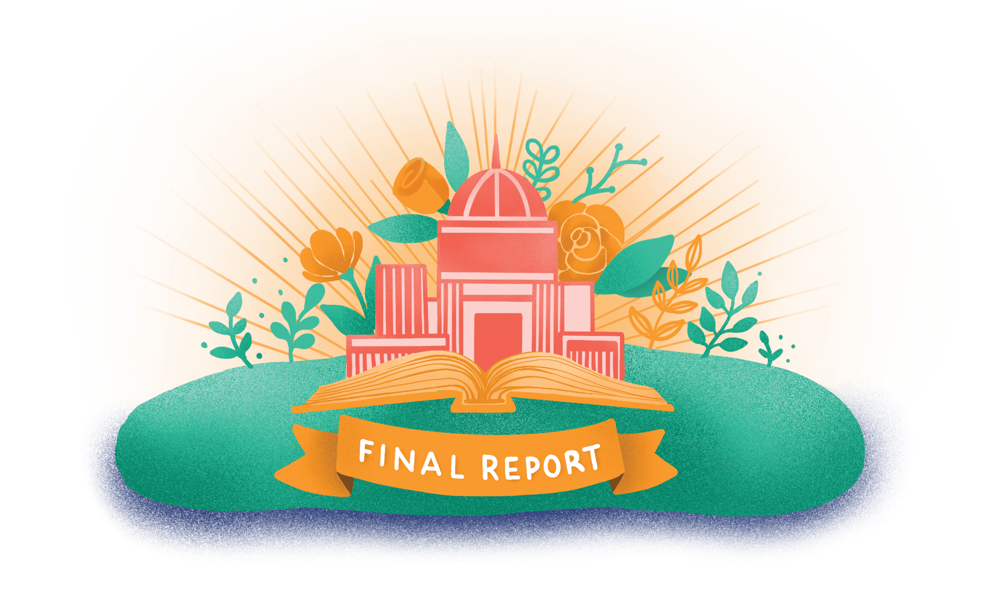

08
It's time to go public with your findings and celebrate! In this stepping stone, you will bring together everything you've been working on to create your final product and share your research findings and recommendations with key decision makers, project partners, media outlets and community members.
Time Commitment:
4-6 sessions
1.
Choose from these to help you plan it:
Sample Agenda (planning how you will
create your final product)
Crafting Our Story on M.A.R.S. (identifying communication goals, strategies and target audience)
Final Product Outline: Proposed Structure (choosing what to include in your final product)
Final Product Presentation Slides:
Proposed Outline (designing presentation slides)
Do these to write and design it:
Tell it Like it Is: Final Product Packet (writing your final product/report)
Styling Your Report: Final Product (developing a consistent style for your report)
2.
Do these to help you plan it:
Planning Your Presentations
(developing the format, style and strategy for your
presentation)
The Big Day: Presentation Checklist (preparing for your presentation)
Use these to practice:
Public Speaking: Whose Line Is It? (practicing public speaking skills)
Public Speaking Tips (identifying successful public speaking strategies)
3.
Do this to evaluate your overall experience:
Program Reflection Focus Group (identifying what worked well and what could be improved in your project)
Use this to commemorate your accomplishments:
Sample Certificate (recognizing and appreciating team members)
download